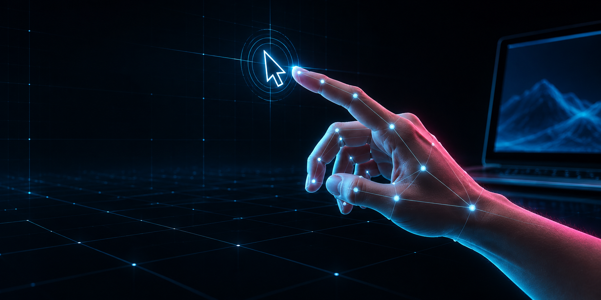

I
Point
Raise only your index finger to move the cursor.
MOVE
Move, click, drag and scroll without touching your mouse. Your webcam tracks one hand locally and turns deliberate gestures into stable cursor control.
Actions only trigger after a gesture stays clear for several frames. Small shakes are ignored by the motion engine.
Raise only your index finger to move the cursor.
MOVEQuick release clicks once. Hold for 450 ms to drag.
CLICK / DRAGOpen the right-click context menu.
RIGHT CLICKDouble-click to open a file or application.
DOUBLE CLICKLock the cursor exactly where it is.
CURSOR LOCKMove vertically for smooth scrolling.
SCROLLAdaptive smoothing filters tiny landmark changes while keeping large movements responsive. Pinch distance is normalized to your hand size, so gestures remain consistent when you move closer to the camera.
Air Pointer processes the webcam feed locally. The app does not upload, store or transmit your camera video.
Beta note: the installer is not code-signed yet, so Windows SmartScreen may ask you to confirm before installation.
Install, allow camera access, show one hand and start control.